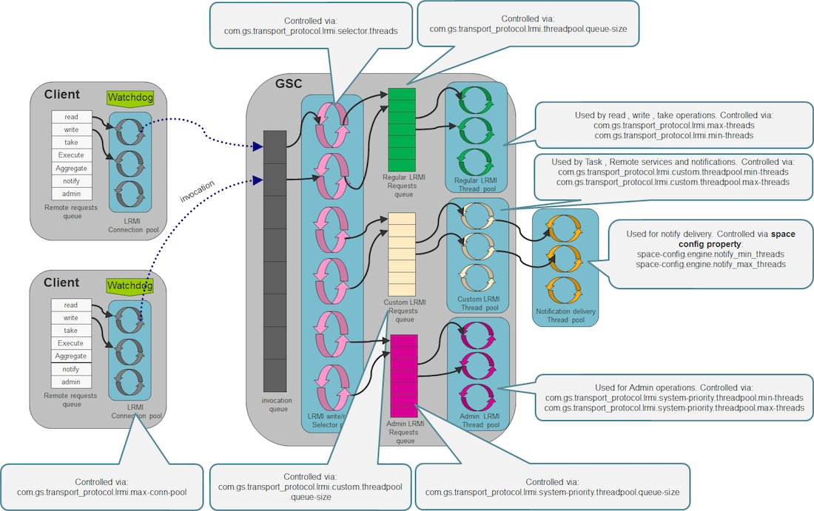

<?xml version="1.0" encoding="utf-8"?>
<html xmlns:MadCap="http://www.madcapsoftware.com/Schemas/MadCap.xsd">
    <head>
    </head>
    <body>
        <div class="product-bar">
            <p><a><MadCap:variable name="General.ProductXAP" /></a>
            </p>
        </div>
        <h1>Network Considerations</h1>
        <h1><a name="binding-the-process-to-a-machine-ip-address"></a>Binding the Process to a Machine IP Address</h1>
        <p>In many cases, the machines that are running <MadCap:variable name="General.ProductNameIE" />, <MadCap:variable name="General.ProductNameXAP" /> (i.e., a GSA, GSM, or GSC), or <MadCap:variable name="General.ProductNameXAP" /> client applications (such as web servers or standalone JVM/.NET processes) have multiple network cards with multiple IP addresses. To make sure that the <MadCap:variable name="General.ProductNameXAP" /> processes or the <MadCap:variable name="General.ProductNameXAP" /> client application processes bind themselves to the correct IP addresses (accessible from another machines) you should use the <code><MadCap:variable name="General.EnvVariablePrefix" />_NIC_ADDRESS</code> environment variable, or the <a href="http://docs.oracle.com/javase/7/docs/api/java/rmi/server/package-summary.html" target="_blank">java.rmi.server.hostname</a> system property. Both should be set to the IP of the machine (or one of them if a machine has multiple IP addresses). Without specifying this environment/property, in some cases a client process might not be notified of events generated by the runtime environment or the space.</p>
        <p>Examples:</p><pre><code class="language-bash">export <MadCap:variable name="General.EnvVariablePrefix" />_NIC_ADDRESS=10.10.10.100
./gs-agent.sh &amp;
</code></pre><pre><code class="language-bash"> java -Djava.rmi.server.hostname=10.10.10.100 MyApplication
</code></pre>
        <div class="tc-admon-note">
            <p>Using the above approach, you can leverage multiple network cards within the same machine to provide a higher level of hardware resiliency. You can also utilize the network bandwidth in an optimal manner, by binding different JVM processes running on the same physical machine to different IP addresses. One example of this would be four GSCs running on the same machine, where two of the them are using IP_1 and the other two are using IP_2.</p>
            <p>For more information, refer to <a href="../admin/network-multi-nic.html">How to Configure an Environment With Multiple Network Cards (Multi-NIC).</a></p>
        </div>
        <h1><a name="ports"></a>Ports</h1>
        <p>GigaSpaces applications use TCP/IP for most of their remote operations. The following components require open ports:</p>
        <table>
            <thead>
                <tr>
                    <th align="left">Service</th>
                    <th align="left">Description</th>
                    <th align="left">Configuration Property</th>
                    <th align="left">Default value</th>
                </tr>
            </thead>
            <tbody>
                <tr>
                    <td align="left">RMI registry listening port</td>
                    <td align="left">Used as an alternative directory service.</td>
                    <td align="left">com.gigaspaces.system.registryPort System property</td>
                    <td align="left">10098 and above.</td>
                </tr>
                <tr>
                    <td align="left">Webster listening port</td>
                    <td align="left">Internal web service used as part of the application deployment process.</td>
                    <td align="left">com.gigaspaces.start.httpPort System property</td>
                    <td align="left">9813</td>
                </tr>
                <tr>
                    <td align="left">[Web UI Agent]./web-management-console.html)</td>
                    <td align="left">GigaSpaces <MadCap:variable name="General.ProductNameXAP" /> Dashboard Web Application.</td>
                    <td align="left">com.gs.webui.port System property</td>
                    <td align="left">8099</td>
                </tr>
            </tbody>
        </table>
        <p>Here are examples of how to set different LRMI listening ports for the GigaSpaces Management Center, and another set of ports for the GSA/GSC/GSM/Lookup Service:</p><pre MadCap:conditions="Version.14-5-died"><code class="language-bash"> export </code><code class="language-bash">EXT_JAVA_OPTIONS</code><code class="language-bash">=-Dcom.gs.transport_protocol.lrmi.bind-port=7000-7500
</code></pre><pre MadCap:conditions="Version.14-5-born"><code class="language-bash"> export </code><code class="language-bash"><MadCap:variable name="General.EnvVariablePrefix" />_OPTIONS_EXT</code><code class="language-bash">=-Dcom.gs.transport_protocol.lrmi.bind-port=7000-7500
</code></pre><pre MadCap:conditions="Version.14-5-died"><code class="language-bash"> export </code><code class="language-bash">EXT_JAVA_OPTIONS</code><code class="language-bash">=-Dcom.gs.transport_protocol.lrmi.bind-port=8000-8100
</code></pre><pre MadCap:conditions="Version.14-5-born"><code class="language-bash"> export </code><code class="language-bash"><MadCap:variable name="General.EnvVariablePrefix" />_OPTIONS_EXT</code><code class="language-bash">=-Dcom.gs.transport_protocol.lrmi.bind-port=8000-8100
</code></pre>
        <p>A running GSC tries to use the first free port out of the port range specified. The same port might be used for several connections (via a multiplexed protocol). If the entire port range is exhausted, an error is displayed.</p>
        <div class="tc-admon-tip">
            <p>When there are several GSCs or servers running on the same machine, we recommend that you set a different LRMI port range for each JVM.  Having 100 as a port range for the GSCs supports a large number of clients (several thousand).</p>
        </div>
        <h1><a name="lrmi-connection-thread-pool"></a>LRMI Connection Thread Pool</h1>
        <p>The default LRMI behavior opens a different connection on the client side, and starts a connection thread on the server side, when a multithreaded client accesses a server component. All client connections may be shared between all the client threads when communicating with the server. All server-side connection threads may be shared between all client connections.</p>
        <div class="tc-align-center">
            
        </div>
        <h2><a name="client-lrmi-connection-pool"></a>Client LRMI Connection Pool</h2>
        <p>The client LRMI connection pool is maintained per server component; i.e. by each space partition. For each space partition, a client maintains a dedicated connection pool shared between all client threads accessing a specific partition. When multiple partitions (N) are hosted within the same GSC, a client may open maximum of <code>N * com.gs.transport_protocol.lrmi.max-conn-pool</code> connections against the GSC JVM process.</p>
        <p>You may have to change the <code>com.gs.transport_protocol.lrmi.max-conn-pool</code> value (1024) to a smaller number, because the default value may be too high for application with multiple partitions.</p><pre><code class="language-console">Client total # of open connections = com.gs.transport_protocol.lrmi.max-conn-pool * # of partitions
</code></pre>
        <p>This may causea a very large amount of connections to be opened on the client side, resulting in a <span class="tc-bold">Too many open files</span> error. IF this occurs, increase the operating system's max file descriptors amount by doing one of the following:</p>
        <ul>
            <li>
                <p>Calling the following before running the client application (on UNIX):</p><pre><code class="language-bash">ulimit -n 65536
</code></pre>
            </li>
            <li>
                <p>Lowering the <code>com.gs.transport_protocol.lrmi.max-conn-pool</code> value.</p>
            </li>
        </ul>
        <h2><a name="server-lrmi-connection-thread-pool"></a>Server LRMI Connection Thread Pool</h2>
        <p>The LRMI connection thread pool is a server-side component. This thread pool is in charge of executing the incoming LRMI invocations. It is a single thread pool within the JVM that executes all the invocations, from all the clients and replication targets.</p>
        <h1><a name="lookup-locators-and-groups"></a>Lookup Locators and Groups</h1>
        <p>A space (or any other service, such as a GSC or GSM) publishes (or registers/exports) itself within the <a href="../overview/the-runtime-environment.html#lus">Lookup Service</a>. The Lookup Service (also called the service proxy) acts as the system directory service. It keeps information about each service, such as its location and its exposed remote methods. Every client or service needs to discover a Lookup Service as part of its bootstrap process.</p>
        <p>There are two main options for how to discover a Lookup Service:</p>
        <ul>
            <li>
                <p><span class="tc-bold">Via locator(s)</span> - Unicast Discovery mode. A specific IP (or hostname) is used to indicate the machine running the Lookup Service. This option can be used when multicast communication is disabled on the network, or when you want to avoid the overhead involved with multicast discovery.</p>
            </li>
            <li>
                <p><span class="tc-bold">Via group(s)</span> - Multicast Discovery mode. Relevant <span class="tc-bold">only when the network supports multicast</span>. This is a "tag" you assign to the lookup.  Clients that want to register with this Lookup Service, or search for a service proxy, need to use this specific group when discovering the Lookup Service.</p>
            </li>
        </ul>
        <p>To configure the <MadCap:variable name="General.ProductNameXAP" /> runtime components (GSA,GSC,GSM,LUS) to use Unicast discovery, set the <code><MadCap:variable name="General.EnvVariablePrefix" />_LOOKUP_LOCATORS</code> variable:</p><pre><code class="language-bash">export <MadCap:variable name="General.EnvVariablePrefix" />_LOOKUP_LOCATORS=MachineA,MachineB
./gs-agent.sh &amp;
</code></pre>
        <p>To configure the  <MadCap:variable name="General.ProductNameXAP" /> runtime components (GSA,GSC,GSM,LUS) to use Multicast discovery, set the <code><MadCap:variable name="General.EnvVariablePrefix" />_LOOKUP_GROUPS</code> variable:</p><pre><code class="language-bash">export <MadCap:variable name="General.EnvVariablePrefix" />_LOOKUP_GROUPS=Group1,Group2
./gs-agent.sh &amp;
</code></pre>
        <p>When running multiple systems on the same network infrastructure, you should isolate them by having a dedicated set of Lookup Services (an  GSC/GSM) for each system. Each system should have different locator/group settings.</p>
    </body>
</html>